D01 · 工作台
P1 · 打开Figma画板 · 查看原始截图
- 当前内容与动作
- 4张指标卡、今日训练卡和3条工作事项；“查看全部”无业务跳转。
- 缺口判断
- 未体现已确认的功能分区、模块库选择和配置界面。
- 补齐建议
- 按 D01-01 补分区及模块配置；具体分区名称仍待评审。
原型证据：记录 1 → https://www.figma.com/proto/EyQtDtILGDZDf6neLBL6vs?node-id=20-47&starting-point-node-id=20-47；记录 2 → 18:92；记录 3 → https://www.figma.com/proto/EyQtDtILGDZDf6neLBL6vs?node-id=20-651&starting-point-node-id=20-651
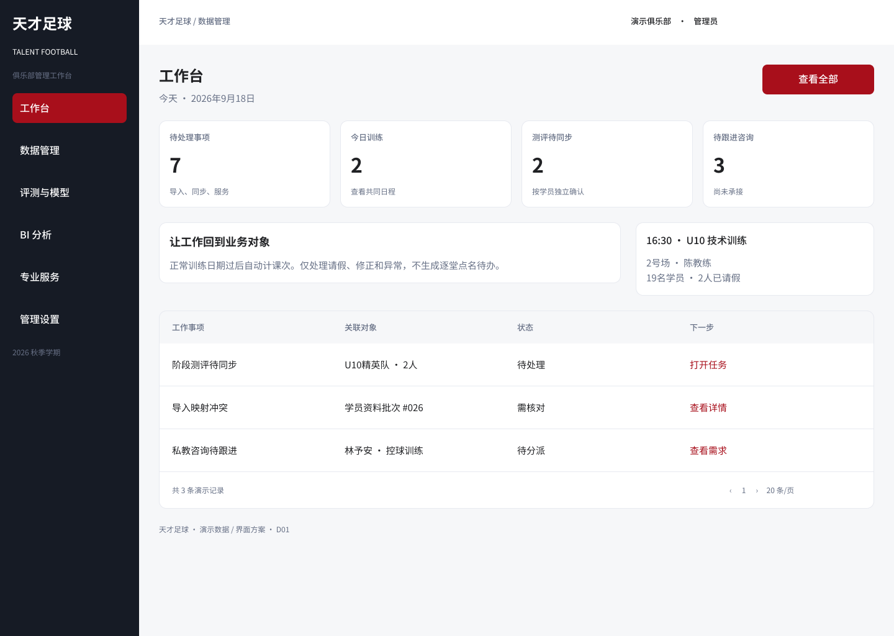
D02 · 学员管理
P1 · 打开Figma画板 · 查看原始截图
- 当前内容与动作
- 学员表、搜索/状态/更多筛选文字；新建→D04，首行→D03。
- 缺口判断
- 数据管理仍直达学员表，无分类/业务表切换；未见本表导入入口；新建落到预填编辑示例。
- 补齐建议
- 落实 DAT-01 分类导航、表级导入导出，并区分新建空表与编辑态。
原型证据：新建学员 → 18:17；记录 1 → 18:12
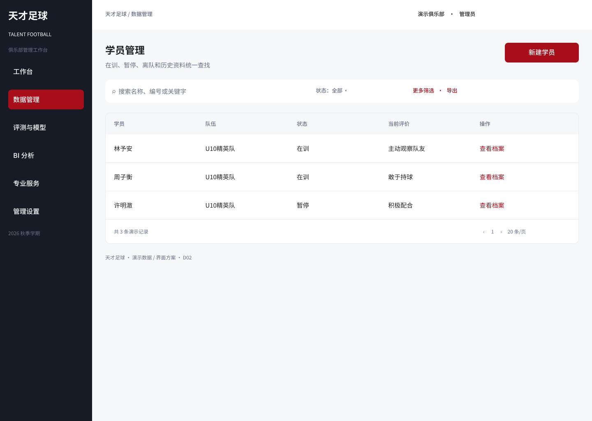
D03 · 学员档案
P1 · 打开Figma画板 · 查看原始截图
- 当前内容与动作
- “基本资料”等5个页签，下方实际为训练、测评、评价记录表；仅编辑按钮连接D04。
- 缺口判断
- 基础档案字段未完整展开；各页签和关联记录未展示对应内容/跳转。
- 补齐建议
- 补真实档案分区及联系人关系；设计各页签内容、业务详情和返回上下文。
原型证据：编辑档案 → 18:17
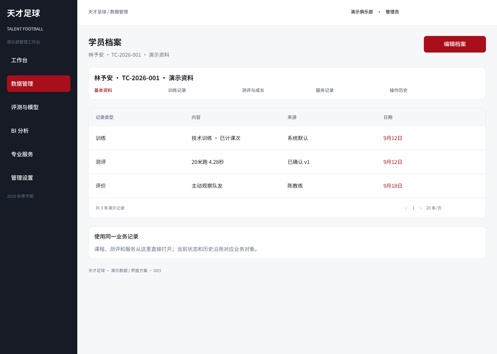
D04 · 编辑学员
P1 · 打开Figma画板 · 查看原始截图
- 当前内容与动作
- 5组概括字段；联系人、保险与课包以说明性文字表示；保存→D03。
- 缺口判断
- 姓名/队伍之外的实际控件和字段边界不足，关联联系人及保障资料维护未展开。
- 补齐建议
- 按已确认字段分组，补关联选择、外部来源/更新时间及可编辑范围；不增加未经核定的个人字段。
原型证据：保存档案 → 18:12
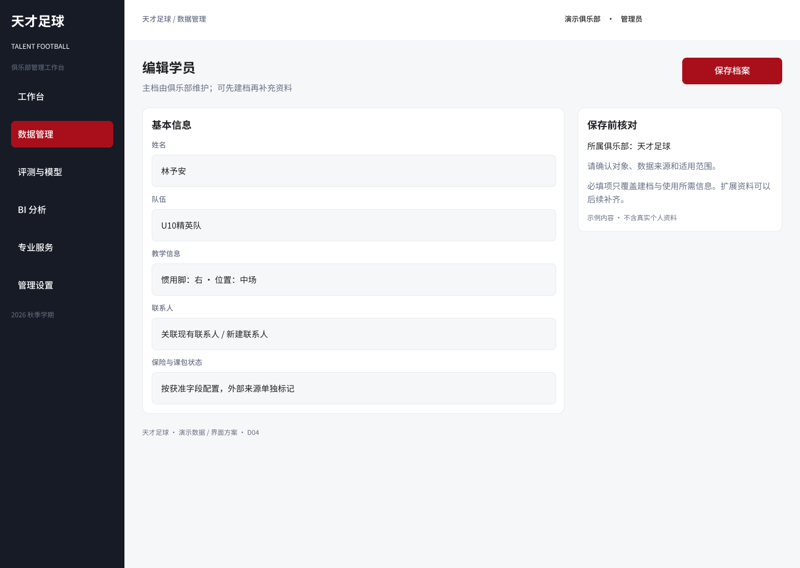
D05 · 家长与联系人
P1 · 打开Figma画板 · 查看原始截图
- 当前内容与动作
- 联系人、关系对象、联系信息、绑定状态列表；新增/查看关系/管理关系无业务跳转。
- 缺口判断
- 缺联系人新建、详情编辑、多人关系维护及与账号绑定区分的界面。
- 补齐建议
- 补联系人详情/编辑和关系维护抽屉，明确绑定与联系人操作边界。
原型证据：本画板未检出非全局导航原型动作
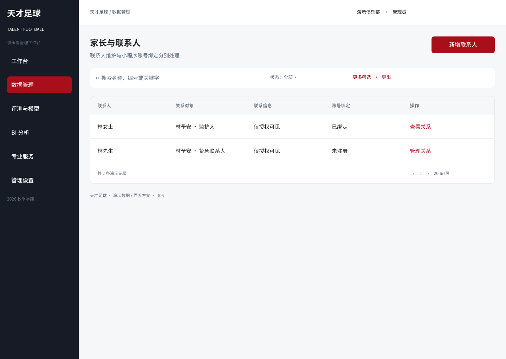
D06 · 球探人员库
P1 · 打开Figma画板 · 查看原始截图
- 当前内容与动作
- 球探人员列表；首行→D07；“新建球探档案”无业务跳转。
- 缺口判断
- 缺球探人员建档/编辑界面，来源与负责人只能在示例表查看。
- 补齐建议
- 补建档编辑及查重反馈，沿用独立人员身份。
原型证据：记录 1 → 18:32
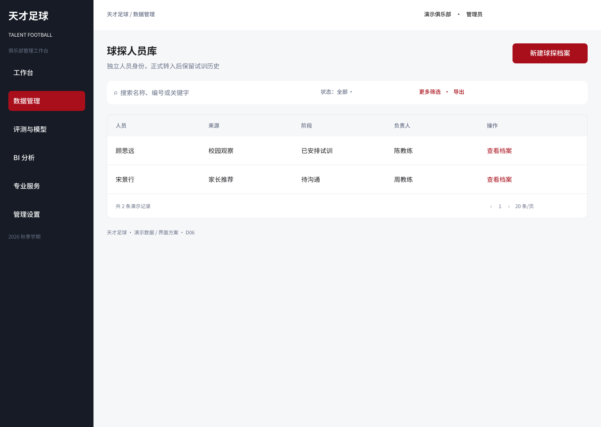
D07 · 球探档案与转入
P2 · 打开Figma画板 · 查看原始截图
- 当前内容与动作
- 球探人员身份和观察/参训事件表；转正式→D26。
- 缺口判断
- 基础资料与事件详情未展开，5个通用页签无对应内容。
- 补齐建议
- 完善人员资料、来源、观察/临时参训明细，连接已有相关业务。
原型证据：预览转正式 → 25:638
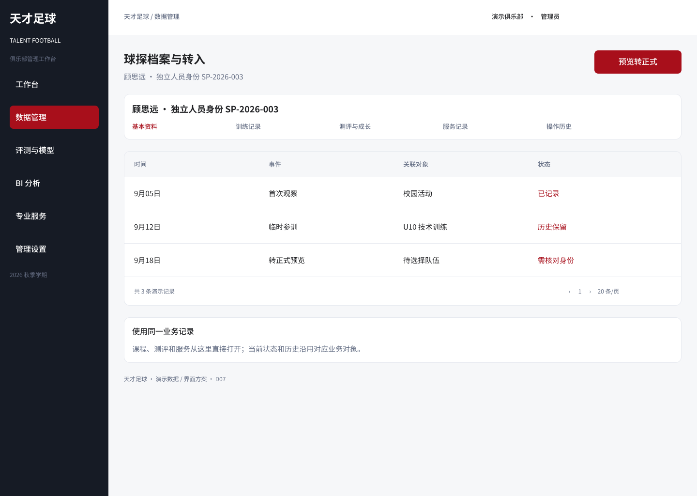
D08 · 教练与任职
P1 · 打开Figma画板 · 查看原始截图
- 当前内容与动作
- 教练、专长、任职、队伍授权列表；添加和查看授权无业务跳转。
- 缺口判断
- 缺教练档案、任职维护、授权及排课查询的可用入口。
- 补齐建议
- 补教练详情/编辑、任职历史和队伍授权；排课关联共同日程，具体信息架构待设计。
原型证据：本画板未检出非全局导航原型动作
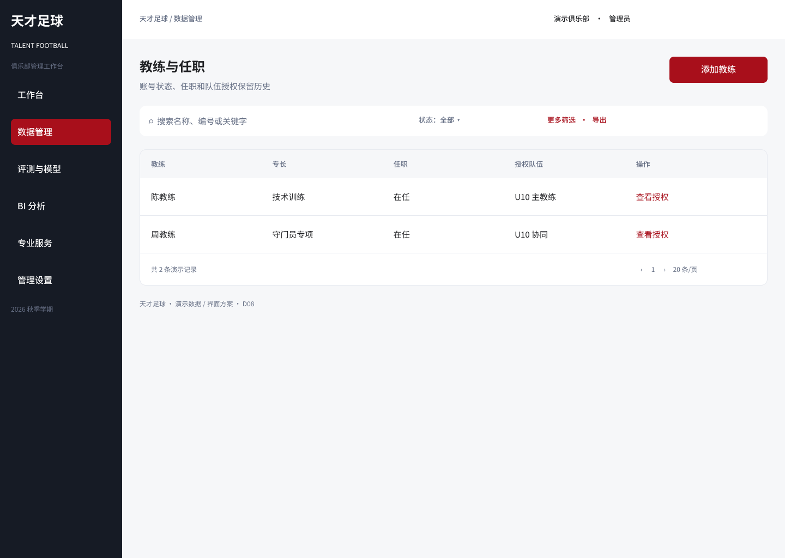
D09 · 队伍管理
P1 · 打开Figma画板 · 查看原始截图
- 当前内容与动作
- 队伍列表；首行→D10；新建队伍无业务跳转。
- 缺口判断
- 缺队伍新建/编辑表单及主档字段维护。
- 补齐建议
- 补队伍主档维护，与成员、教练关系操作分开。
原型证据：记录 1 → 18:47
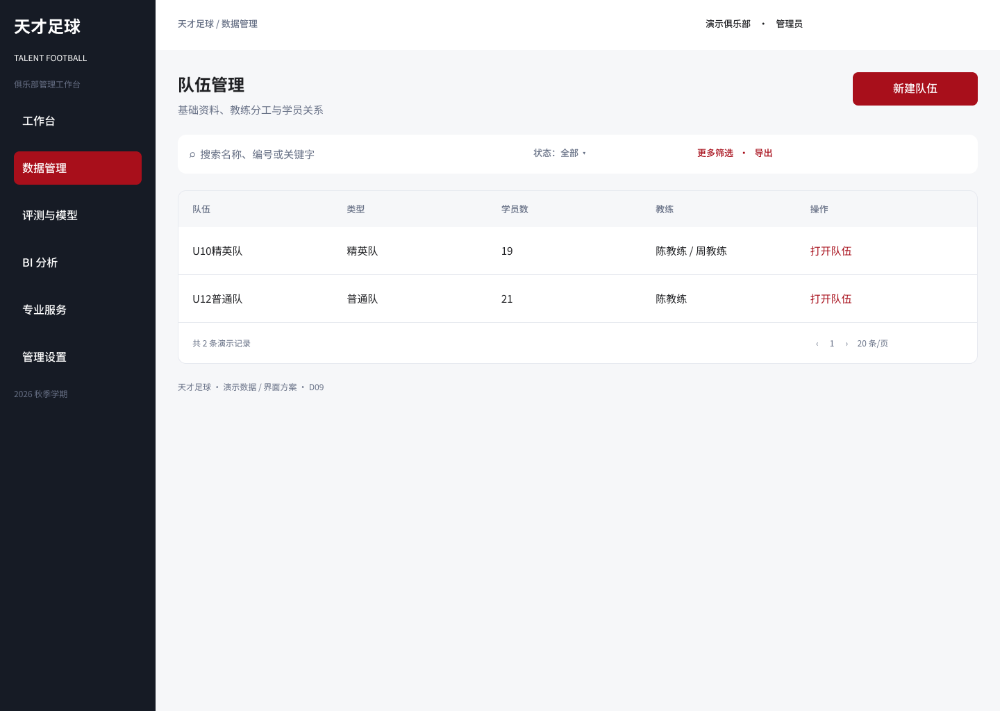
D10 · 队伍详情
P1 · 打开Figma画板 · 查看原始截图
- 当前内容与动作
- 正式队员/临时参训列表；“维护成员”→D04编辑学员。
- 缺口判断
- 成员关系维护指向个人主档，缺加入/结束日期及临时名单的专用操作。
- 补齐建议
- 补队伍成员关系维护，保留生效历史；改正按钮目标。
原型证据：维护成员 → 18:17
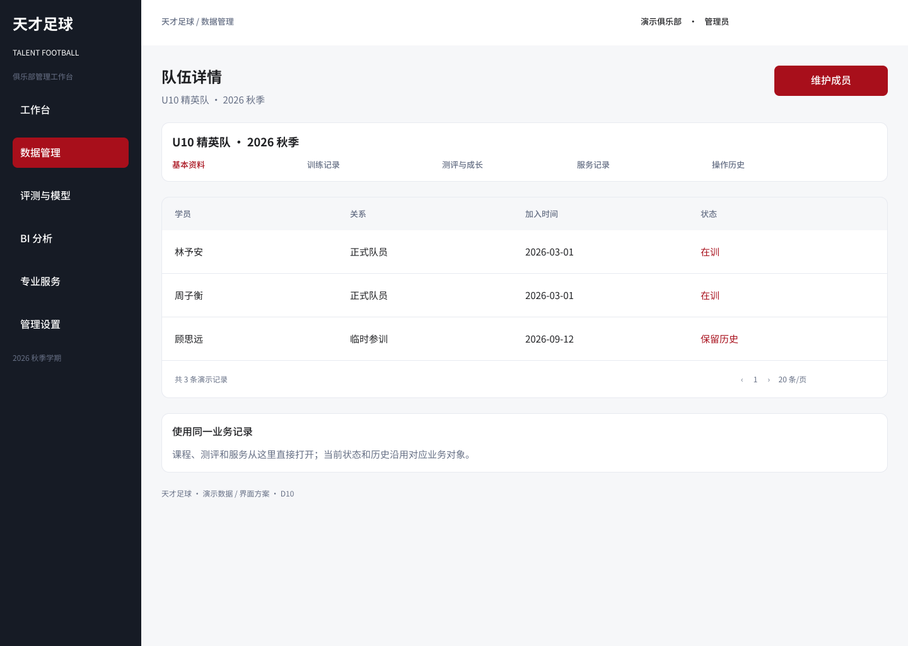
D11 · 学期与场地
P1 · 打开Figma画板 · 查看原始截图
- 当前内容与动作
- 学期与场地混排一表；首行→D13；新增资料和编辑场地无业务跳转。
- 缺口判断
- 缺学期基础信息和场地详情/编辑；地址、设施、类型、坐标未呈现。
- 补齐建议
- 按最终分类分别承接两类对象；补对应字段、关联使用及停用影响。
原型证据：记录 1 → 18:62
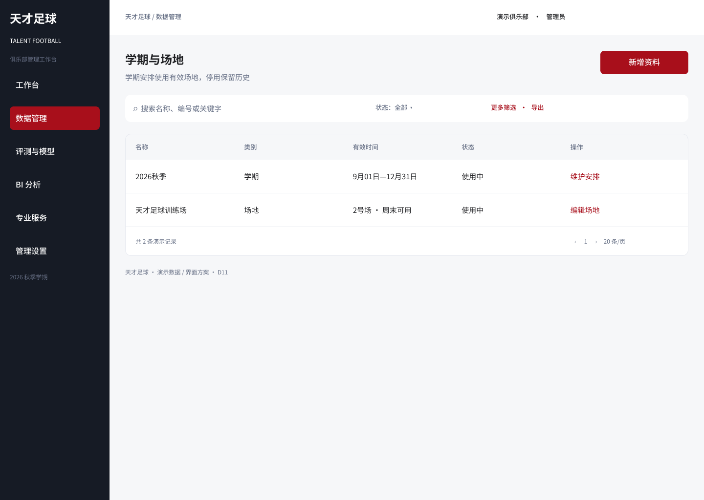
D12 · 共同日程
P1 · 打开Figma画板 · 查看原始截图
- 当前内容与动作
- 周日历和活动表；新建活动→D13学期排课；活动卡/记录无业务跳转。
- 缺口判断
- 缺单次活动详情，独立比赛/其他活动不能由学期重复排课表完整承接。
- 补齐建议
- 补训练/比赛/其他的适用表单、详情、变更与取消历史，明确活动类型。
原型证据：新建活动 → 18:62
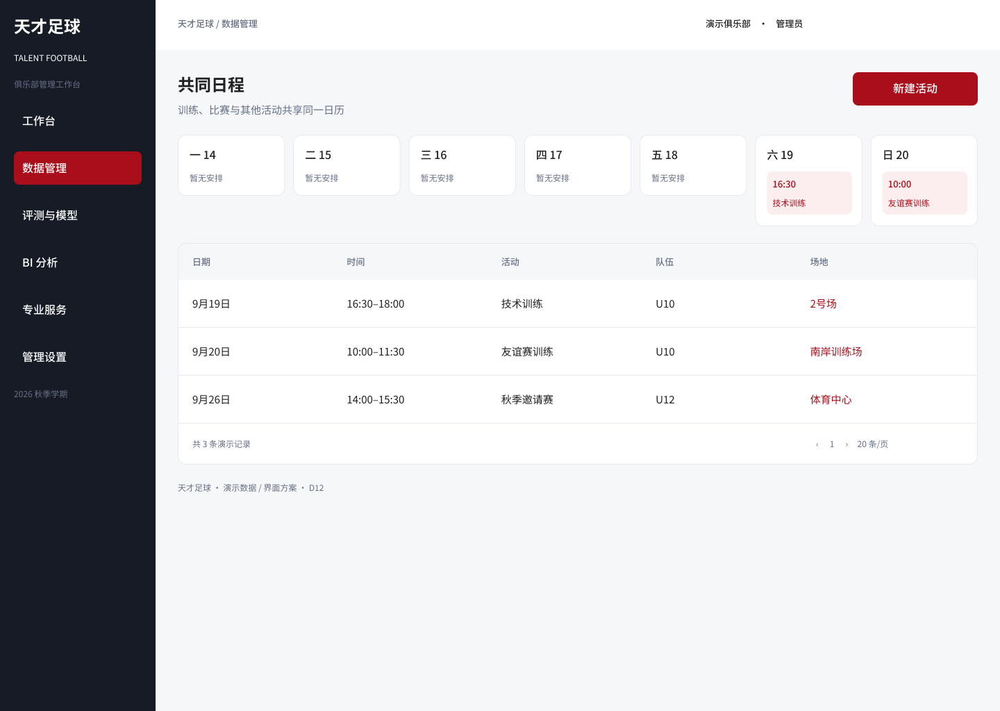
D13 · 学期排课与变更
P1 · 打开Figma画板 · 查看原始截图
- 当前内容与动作
- 学期、队伍、重复安排、教练/场地等概括字段；“预览安排”无业务跳转。
- 缺口判断
- 缺批量安排预览、单次/系列变更范围、影响说明与保存结果。
- 补齐建议
- 补排课选择器、预览和例外处理；O-01审批模式继续待定，不代替用户决策。
原型证据：本画板未检出非全局导航原型动作
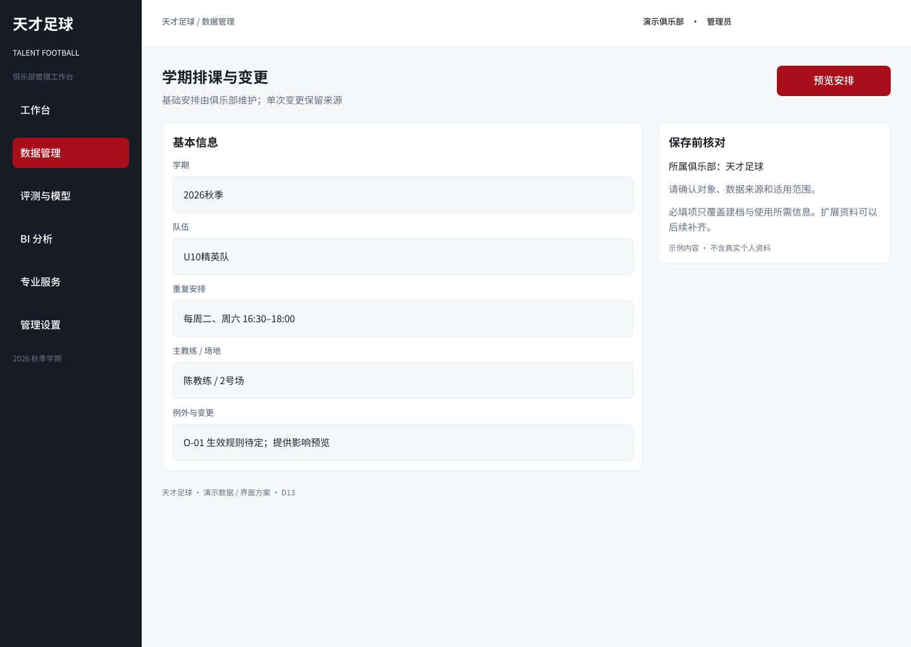
D14 · 原子训练内容库
P1 · 打开Figma画板 · 查看原始截图
- 当前内容与动作
- 原子训练内容列表；新建内容→D15公共模板；各行编辑无业务跳转。
- 缺口判断
- 原子内容与组合模板混用维护目标，原子内容专用编辑未呈现。
- 补齐建议
- 分别补原子内容详情/编辑和模板组合编辑。
原型证据：新建内容 → 18:72
D15 · 训练内容与公共模板
P1 · 打开Figma画板 · 查看原始截图
- 当前内容与动作
- 模板名称、组成内容字符串、总时长、适用范围和停用说明；保存无业务跳转。
- 缺口判断
- 缺选择/排序训练内容、分项时长及模板明细操作。
- 补齐建议
- 补模板组成编辑、保存反馈与已使用内容的保留说明。
原型证据：本画板未检出非全局导航原型动作
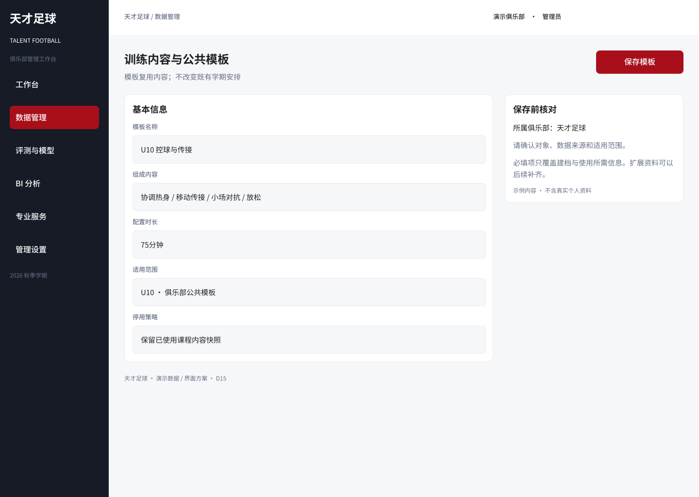
D16 · 训练记录与修正
P1 · 打开Figma画板 · 查看原始截图
- 当前内容与动作
- 训练记录显示结果、来源、修订号；首行→D17；筛选导出无业务跳转。
- 缺口判断
- 标题承诺修正，但画面没有单条修正表单和更正原因/结果预览。
- 补齐建议
- 补记录详情和授权修正，并连通导出；沿用无需审批及不联动财务规则。
原型证据：记录 1 → 18:82
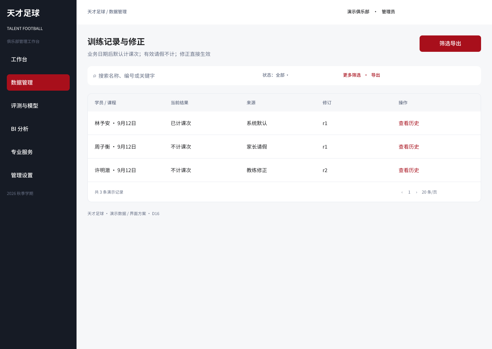
D17 · 业务修改历史
P2 · 打开Figma画板 · 查看原始截图
- 当前内容与动作
- 操作者、前后结果、来源和时间；返回→D16。
- 缺口判断
- 缺明确学员/课程上下文及示例中的修正原因；详情仍偏通用表。
- 补齐建议
- 补对象摘要、原因与来源定位，保持历史只读。
原型证据：返回记录 → 18:77
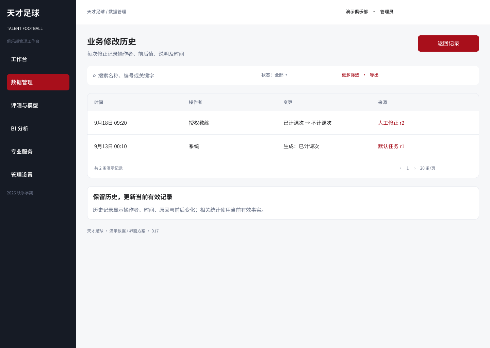
D18 · 导入：选择数据
P2 · 打开Figma画板 · 查看原始截图
- 当前内容与动作
- 4步导入向导、对象模板示例表；选择文件→D19。
- 缺口判断
- 尚未画出对象选择、模板下载、已选文件及格式/上传失败状态。
- 补齐建议
- 完善第一步选择和文件校验状态，覆盖已确认的业务表类型。
原型证据：选择文件 → 18:92
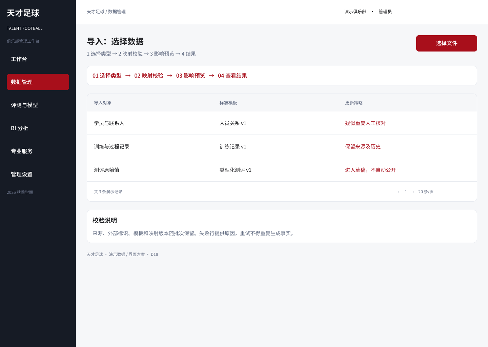
D19 · 导入：字段映射
P1 · 打开Figma画板 · 查看原始截图
- 当前内容与动作
- 源列/目标/校验/处理方式静态表；校验并预览→D20。
- 缺口判断
- 字段映射、空值选择和错误定位仅为文字，没有实际选择或修改方式。
- 补齐建议
- 补映射选择器、空值策略、错误行详情及重新校验。
原型证据：校验并预览 → 18:97
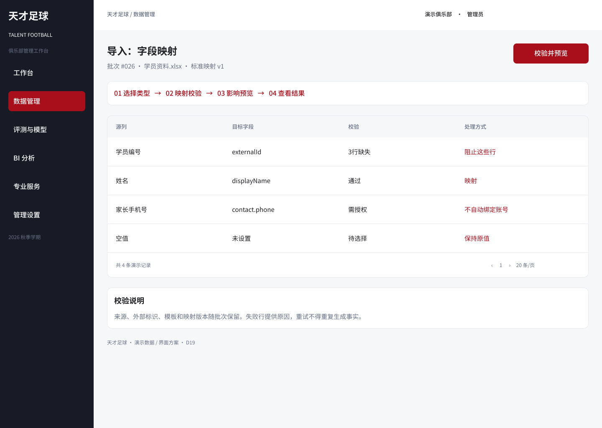
D20 · 导入：影响预览
P1 · 打开Figma画板 · 查看原始截图
- 当前内容与动作
- 新增16、更新8、重复2、错误3汇总；确认→D21。
- 缺口判断
- 查看行、前后值、处理冲突、下载错误均无业务动作，关键预览内容未展开。
- 补齐建议
- 补逐行差异与冲突处理，按对象模板明确部分成功策略，保留确认前状态。
原型证据：确认导入合格行 → 18:102
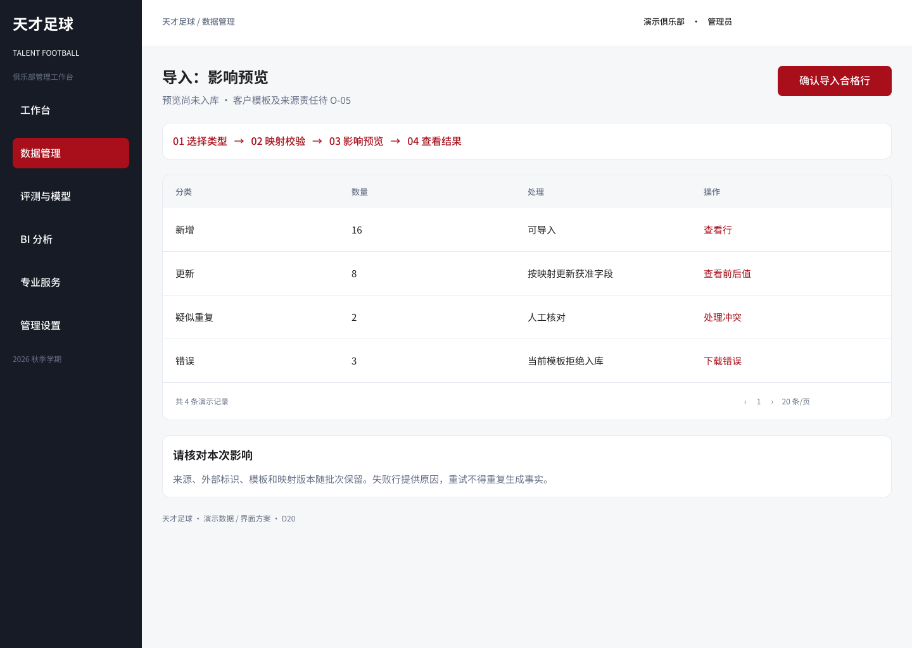
D21 · 导入：批次结果
P2 · 打开Figma画板 · 查看原始截图
- 当前内容与动作
- 成功/未处理汇总；重试→D19。
- 缺口判断
- 缺成功记录与失败行详情、错误下载及重试结果展示。
- 补齐建议
- 完善批次详情和按行追溯，体现去重重试结果。
原型证据：修正后重试 → 18:92
D22 · 导出数据
P1 · 打开Figma画板 · 查看原始截图
- 当前内容与动作
- 类型、筛选、字段、敏感信息、用途概括表单；生成导出无业务跳转。
- 缺口判断
- 缺可选字段/范围控件以及生成中、下载、失败状态。
- 补齐建议
- 补整表/筛选范围及获准字段选择、下载结果和审计关联。
原型证据：本画板未检出非全局导航原型动作
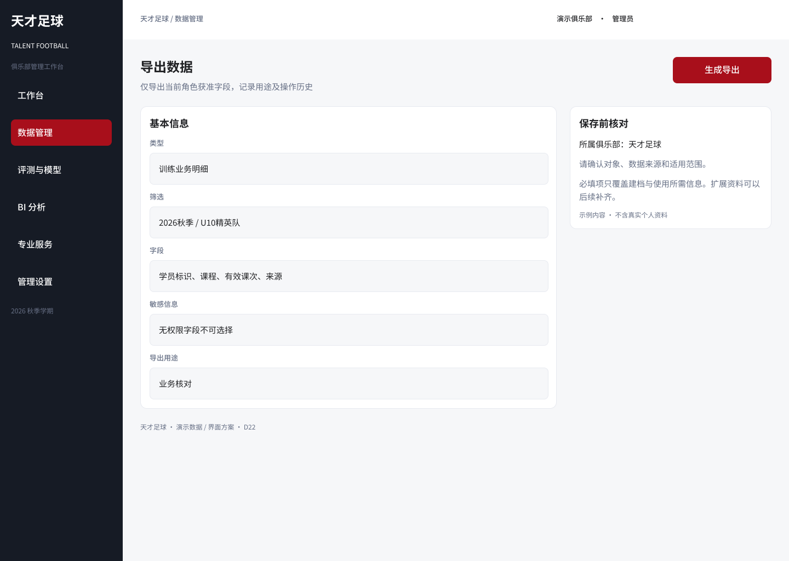
D23 · 数据质量
P1 · 打开Figma画板 · 查看原始截图
- 当前内容与动作
- 缺课程、重复身份、未知单位问题列表；主按钮仅→D21。
- 缺口判断
- 补充证据、查看双方和修正映射未连接处理界面。
- 补齐建议
- 补问题详情及指向对应维护对象的处理入口；人工合并细则仍需确认。
原型证据：查看批次 → 18:102
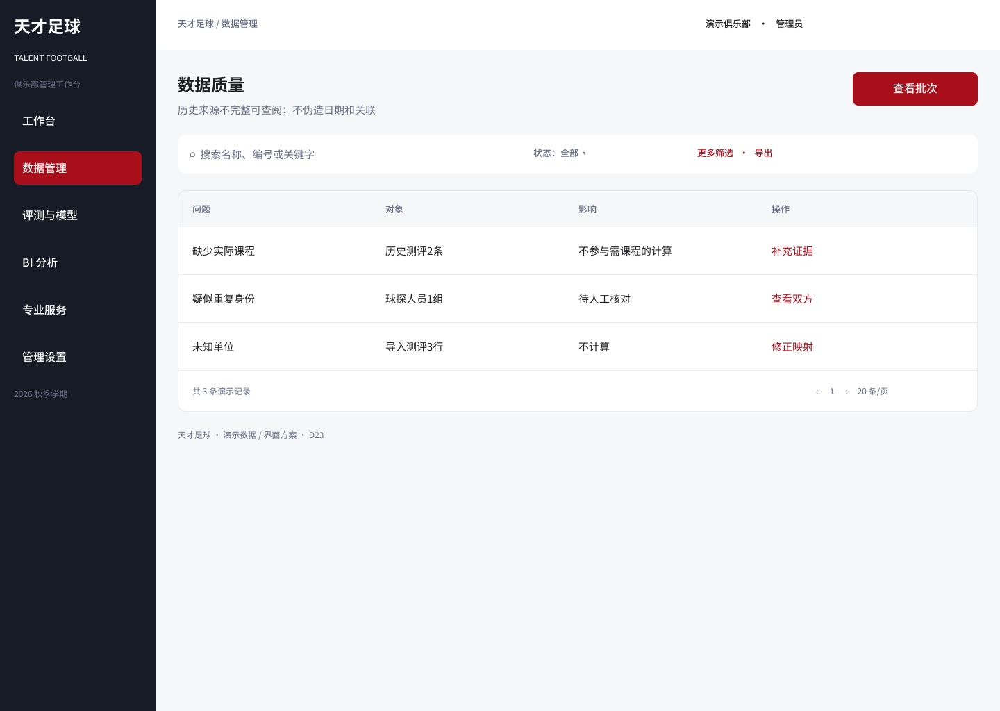
D24 · 内容与展示配置
P1 · 打开Figma画板 · 查看原始截图
- 当前内容与动作
- Banner、分享模板、快捷目录共表；仅Banner示例/新建→D25。
- 缺口判断
- 其他内容类型的配置详情未体现；未承接里程碑规则与素材维护。
- 补齐建议
- 按内容类型补适用编辑器；将已确认里程碑后台需求落实到合适模块，菜单位置待定。
原型证据：新建内容 → 18:122；记录 1 → 18:122
D25 · 内容编辑与预览
P1 · 打开Figma画板 · 查看原始截图
- 当前内容与动作
- 标题、摘要、封面说明、关联对象、范围、发布时间；“预览发布”直接→D24。
- 缺口判断
- 缺实际图片选择和预览态；Banner跳转目标未配置；预览与发布未分开。
- 补齐建议
- 补素材与跳转配置、前端预览及发布反馈；跳转类型不擅自扩大为任意外链。
原型证据：预览发布 → 18:117
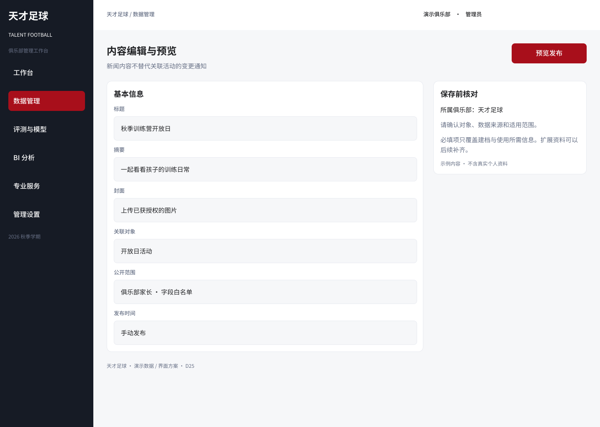
D26 · 转为正式学员
P2 · 打开Figma画板 · 查看原始截图
- 当前内容与动作
- 人员身份、重复核对、队伍、生效日期、保留历史；确认→D03。
- 缺口判断
- 查重仅文字说明；转入顾思远后目标D03仍显示林予安示例，身份衔接不一致。
- 补齐建议
- 补查重比较及阻断反馈，并让转入成功详情保持同一人员。
原型证据：确认转为正式 → 18:12
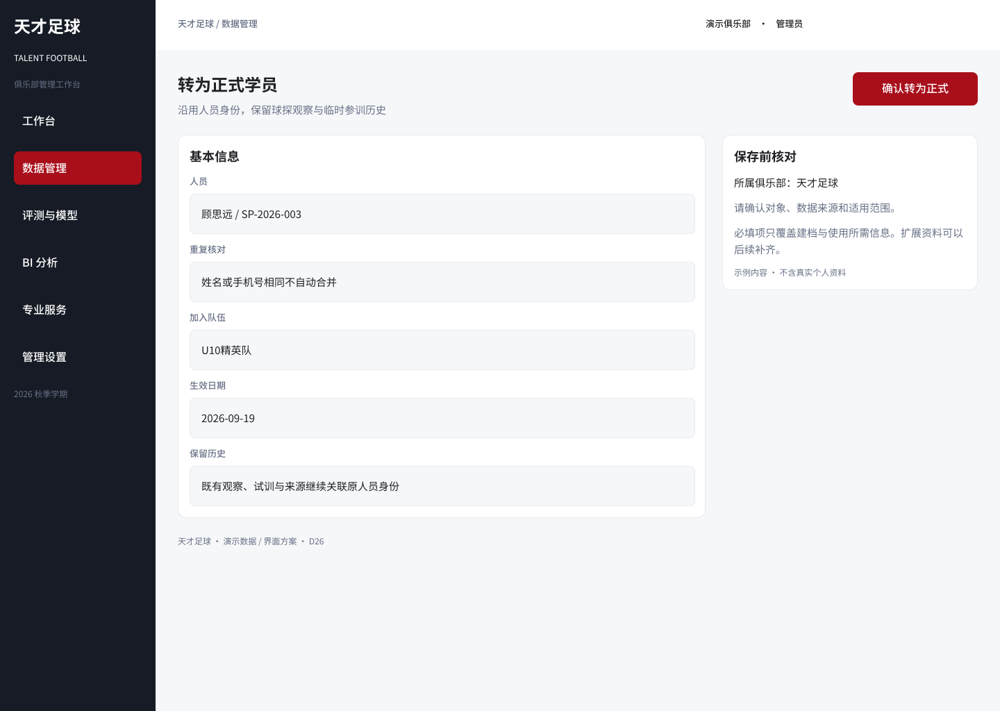
M01 · 测评项目库
P2 · 打开Figma画板 · 查看原始截图
- 当前内容与动作
- 项目类型/单位/版本表；新建及首行→M02。
- 缺口判断
- 尚缺不同类型配置示例、项目停用/版本查看和表级导出交互。
- 补齐建议
- 完善目录维护与使用状态，关联两段评分映射入口。
原型证据：新建项目 → 20:7；记录 1 → 20:7
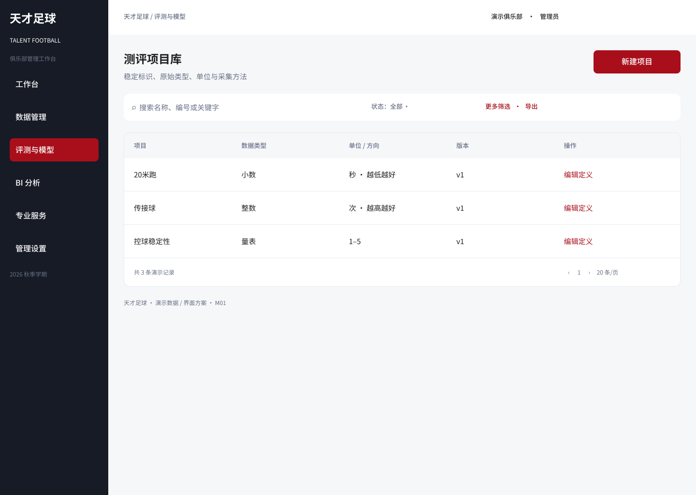
M02 · 项目采集定义
P1 · 打开Figma画板 · 查看原始截图
- 当前内容与动作
- 项目、类型、单位/方向、方法、精度、可见性概括表单。
- 缺口判断
- 未体现已确认的原始成绩→整数分值→等级两段区间维护。
- 补齐建议
- 补关联三层定义、区间上下界和冲突校验；正式阈值仍由业务提供。
原型证据：保存草稿 → 20:2
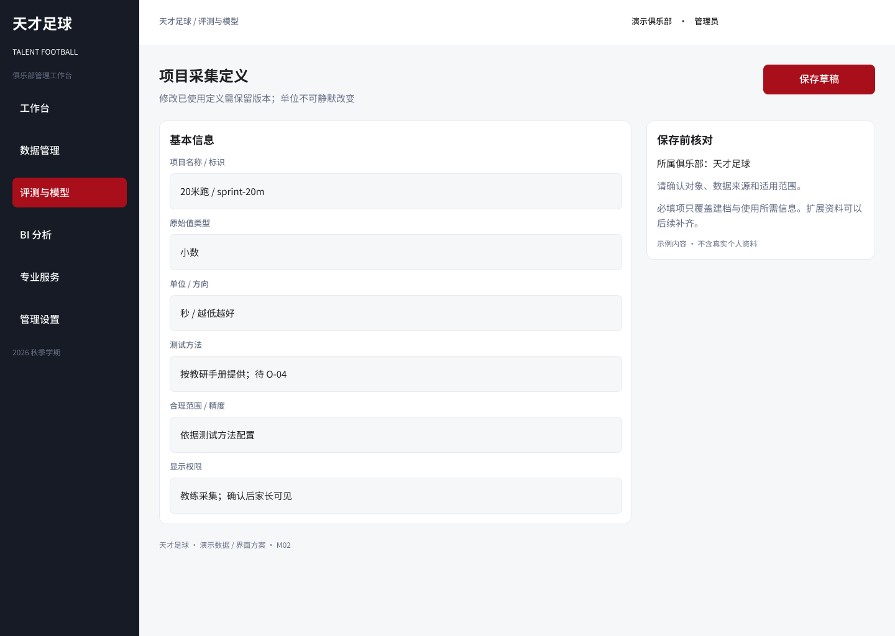
M03 · 模型库
P2 · 打开Figma画板 · 查看原始截图
- 当前内容与动作
- 草稿/发布模型表；新建/首行→M04；第二行查看版本无业务跳转。
- 缺口判断
- 模型详情与已发布版本查看/停用路径不完整。
- 补齐建议
- 补草稿与已发布模型的不同操作及引用影响。
原型证据：新建模型 → 20:17；记录 1 → 20:17
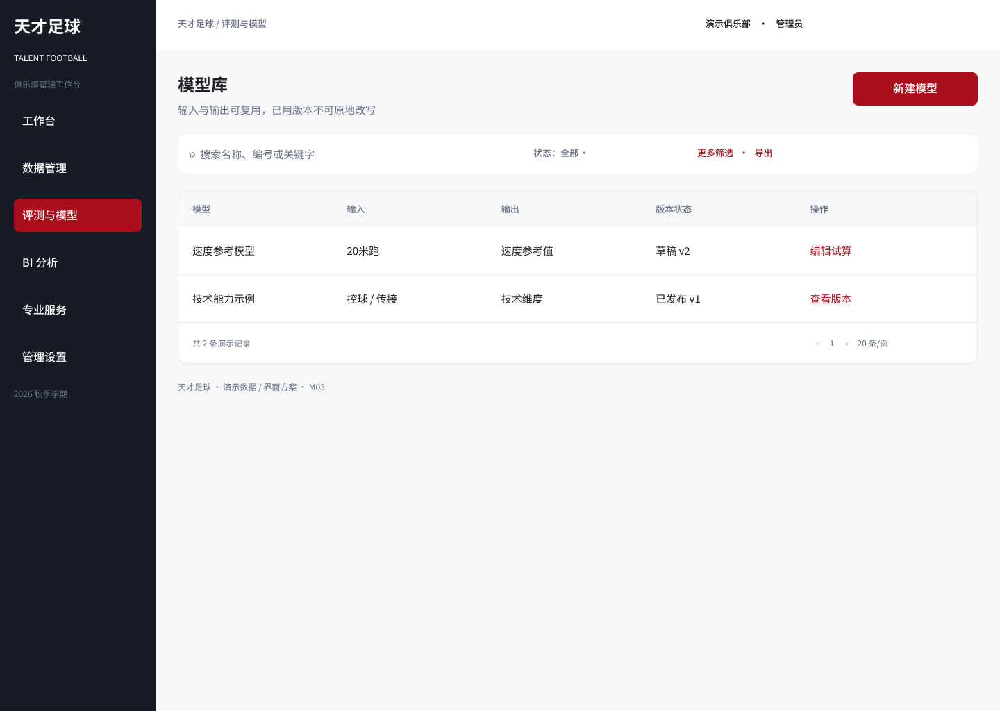
M04 · 模型定义
P1 · 打开Figma画板 · 查看原始截图
- 当前内容与动作
- 输入→模型→输出示意和输入映射表；保存并试算→M05。
- 缺口判断
- 模型规则和参数只有说明，缺实际选择模板、配置参数/权重及输出定义控件。
- 补齐建议
- 补获准参数编辑、依赖选择与校验，复杂公式设计器不自动纳入。
原型证据：保存并试算 → 20:22
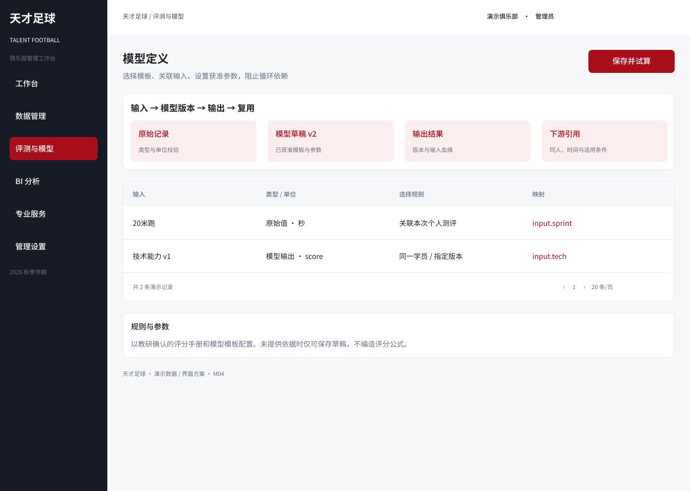
M05 · 模型试算与发布
P1 · 打开Figma画板 · 查看原始截图
- 当前内容与动作
- 完整/缺项/单位错误/循环依赖4类示例；发布→M06。
- 缺口判断
- 未展示真实样例输入、具体输出、定位错误与发布前确认，页面同时列阻断案例仍有发布跳转。
- 补齐建议
- 区分演示案例与本次校验结果，补试算和发布可用/禁用状态。
原型证据：发布新版本 → 20:27
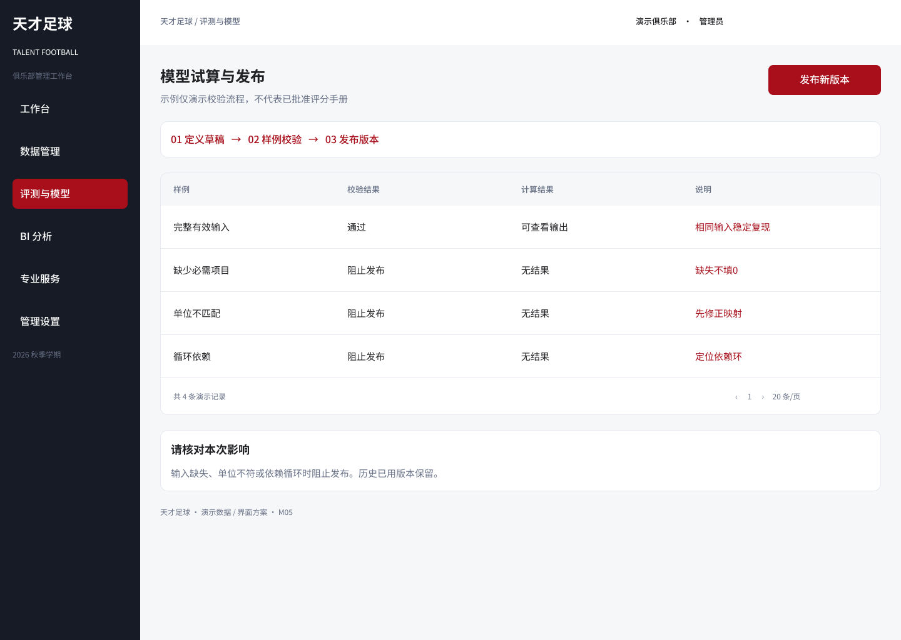
M06 · 版本与血缘
P2 · 打开Figma画板 · 查看原始截图
- 当前内容与动作
- 原始记录、模型、标准、发布版本引用表；输入明细→M11。
- 缺口判断
- 两段映射版本、具体输入引用和修订差异尚未完整体现。
- 补齐建议
- 补可追溯的输入/映射/结果版本详情及精确对象跳转。
原型证据：查看输入明细 → 20:52
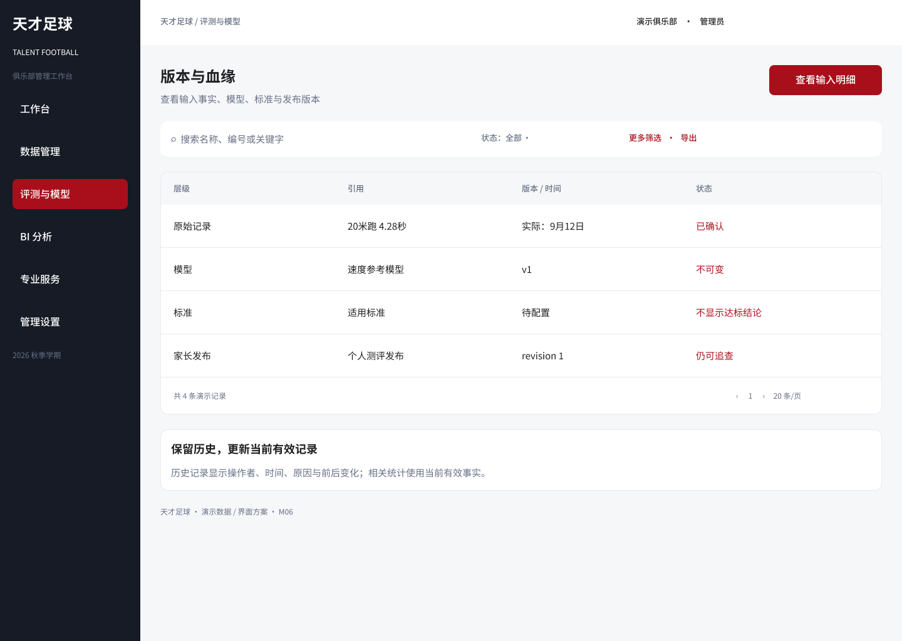
M07 · 培养标准
P2 · 打开Figma画板 · 查看原始截图
- 当前内容与动作
- 培养标准列表；新建→M12；行内编辑无业务跳转。
- 缺口判断
- 目录状态和适用条件未细化，编辑/发布/停用路径不全。
- 补齐建议
- 完善标准目录及生命周期入口；依据和适用基准不代填。
原型证据：新建标准 → 25:740
M08 · 任务运营
P2 · 打开Figma画板 · 查看原始截图
- 当前内容与动作
- 任务进度及待同步列表；创建→M09、首行→M10。
- 缺口判断
- 继续补录、不同任务切换未连接；缺任务对象范围与状态细节。
- 补齐建议
- 完善任务概况和各状态入口，保留周期后补录规则。
原型证据：创建多队任务 → 20:42；记录 1 → 20:47
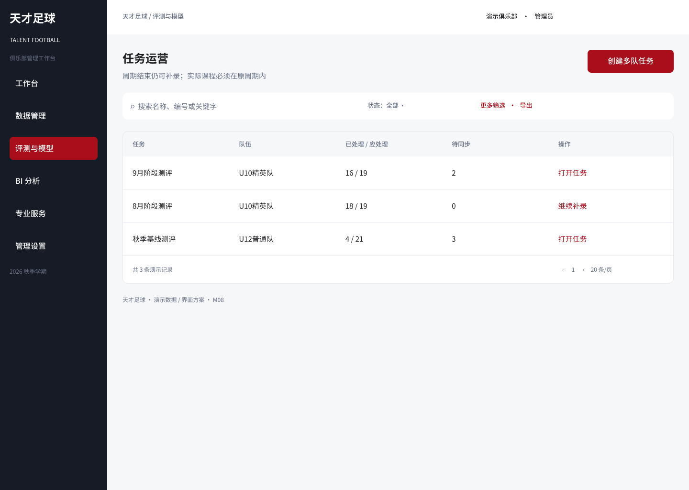
M09 · 创建与下发任务
P1 · 打开Figma画板 · 查看原始截图
- 当前内容与动作
- 任务名、多队、周期、必测项目、名单说明；“预览下发”直接→M10。
- 缺口判断
- 缺逐队名单/必测范围确认，预览与下发结果混在跳转中。
- 补齐建议
- 补范围选择、预览、确认下发及失败恢复；正式/临时参训口径明确。
原型证据：预览下发 → 20:47
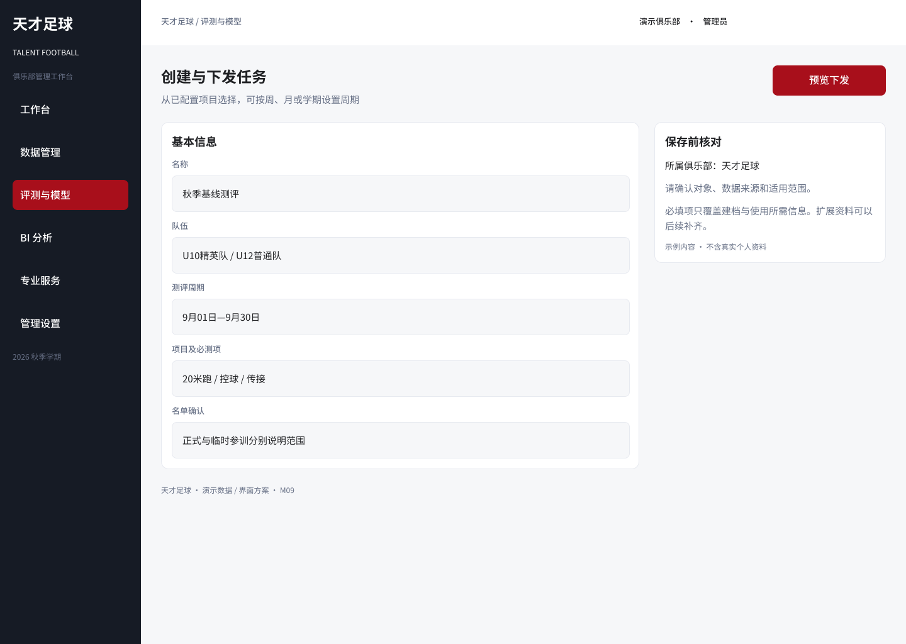
M10 · 采集与同步明细
P1 · 打开Figma画板 · 查看原始截图
- 当前内容与动作
- 已测、不测评、缺项状态表；仅个人结果按钮/首行→M11。
- 缺口判断
- 不测评原因及继续录入未连接，缺项/待同步具体处理方式未展开。
- 补齐建议
- 补状态对应详情和修正入口，明确权限及与教练录入端的衔接。
原型证据：查看个人结果 → 20:52；记录 1 → 20:52
M11 · 个人结果与修订
P1 · 打开Figma画板 · 查看原始截图
- 当前内容与动作
- 原始值、课程日期、发布/草稿版本表；核对修订→M06。
- 缺口判断
- 核对进入版本血缘，不是修订差异/确认界面；缺改值、改课程及确认过程。
- 补齐建议
- 补个人修订比较、确认发布和失败保留；家长旧版保持可见。
原型证据：核对修订 → 20:27
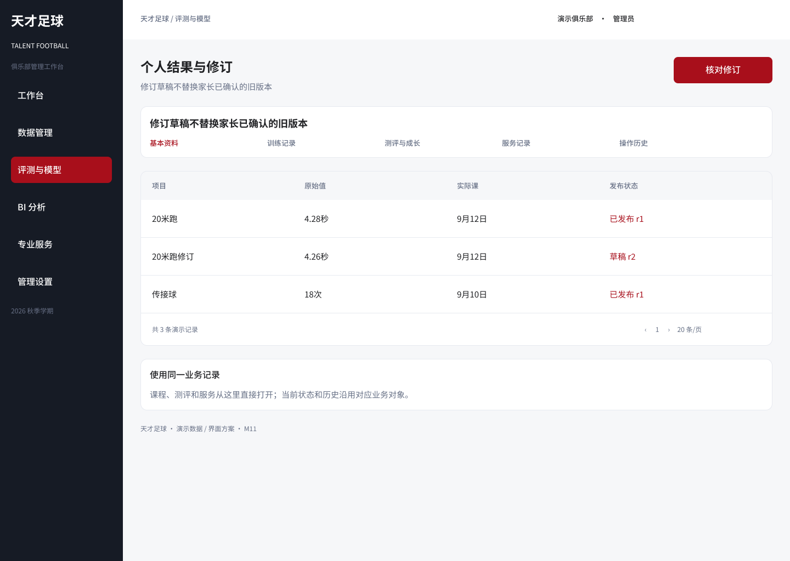
M12 · 培养标准编辑
P1 · 打开Figma画板 · 查看原始截图
- 当前内容与动作
- 标准名称、依据、项目单位、条件、方向、参考区间说明；保存→M07。
- 缺口判断
- 参考区间仍是占位说明，缺实际配置、边界校验和发布路径。
- 补齐建议
- 补区间配置及版本流程；未提供正式依据时维持草稿。
原型证据：保存标准草稿 → 20:32
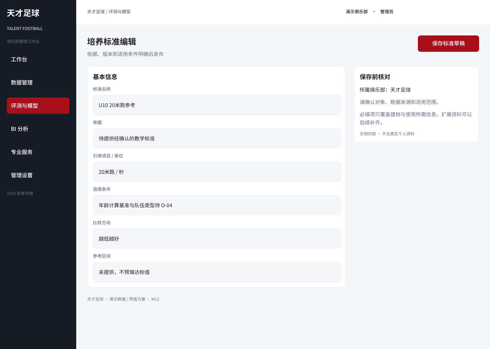
M13 · 成长展示组织
P1 · 打开Figma画板 · 查看原始截图
- 当前内容与动作
- 展示组、内容来源、顺序、历史、家长展示说明；保存→M07。
- 缺口判断
- “拖动调整”只是文本；缺选择/排序界面及本轮后台画板中的业务入口。
- 补齐建议
- 补组织配置交互与入口，并与前端已确认的成长展示需求衔接。
原型证据：保存展示配置 → 20:32
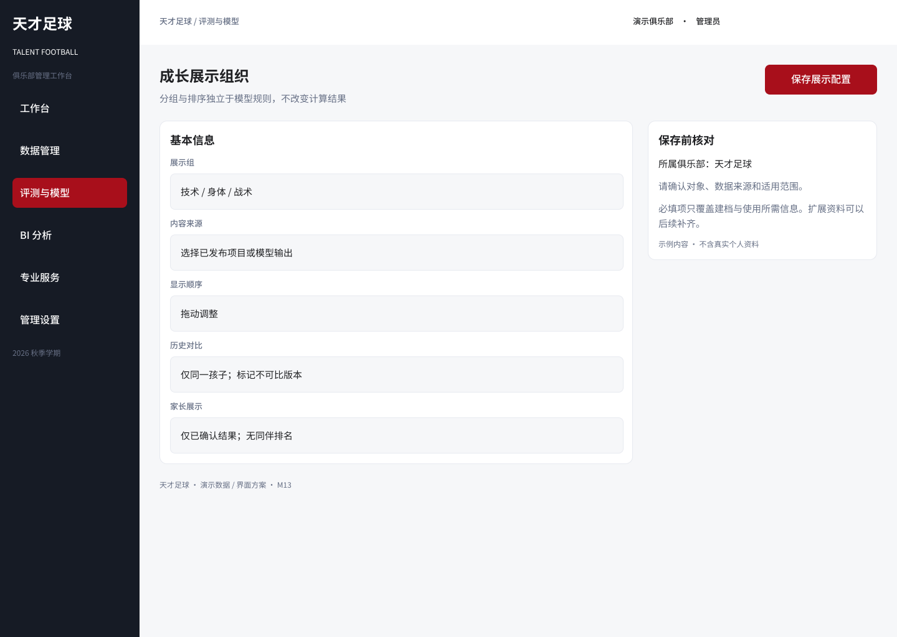
B01 · 运营概况
P2 · 打开Figma画板 · 查看原始截图
- 当前内容与动作
- 3张指标卡、趋势和口径表；查看明细→D02。
- 缺口判断
- 各指标未分别连接构成明细，筛选条件传递未表达；内部已有纵向滚动容器。
- 补齐建议
- 完善学员、缺项和队伍各自明细及筛选回显；初始视口之外内容不按缺页计。
原型证据：查看明细 → https://www.figma.com/proto/EyQtDtILGDZDf6neLBL6vs?node-id=18-7&starting-point-node-id=18-7
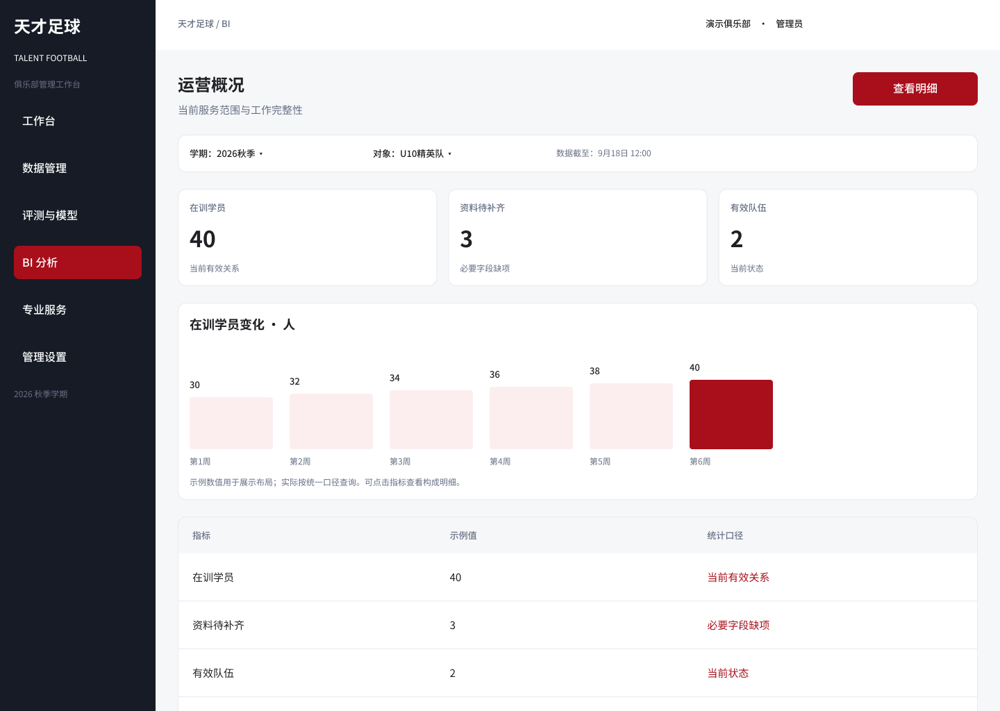
B02 · 训练分析
P2 · 打开Figma画板 · 查看原始截图
- 当前内容与动作
- 课次、请假/修正、配置时长图表；查看明细→D16。
- 缺口判断
- 内容时长指标缺对应明细，未呈现主题导出；内部已有纵向滚动容器。
- 补齐建议
- 补指标对应来源明细、筛选及同口径导出，保持已配置的纵向滚动。
原型证据：查看明细 → https://www.figma.com/proto/EyQtDtILGDZDf6neLBL6vs?node-id=18-77&starting-point-node-id=18-77
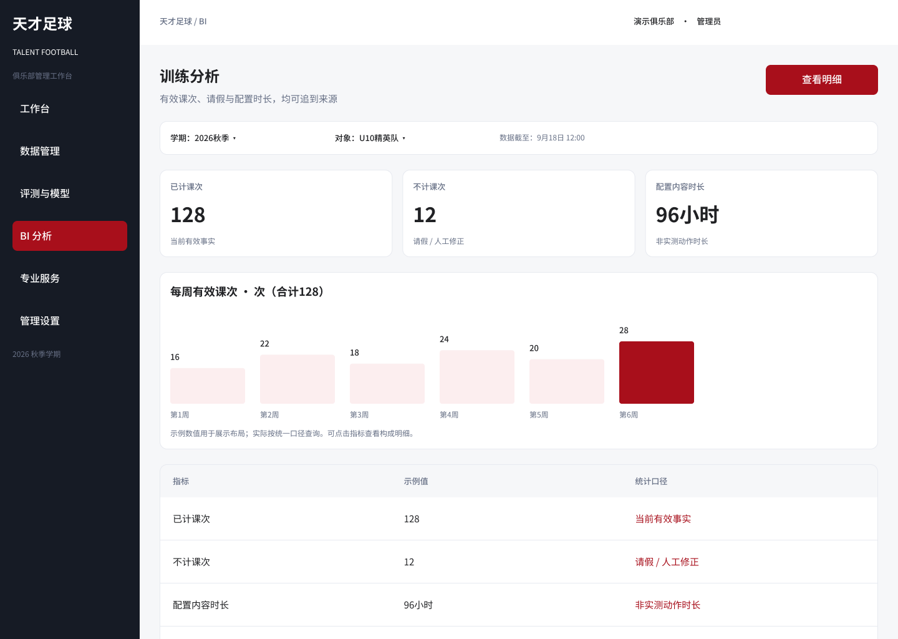
B03 · 测评执行
P2 · 打开Figma画板 · 查看原始截图
- 当前内容与动作
- 应处理/已测/不测评和任务构成图；查看明细→M10。
- 缺口判断
- 待同步维度未单独呈现，缺对应状态的明细筛选；未完成行位于已配置滚动容器内。
- 补齐建议
- 完善未完成/同步状态明细及任务上下文；不将首屏之外的数据行认定为不可达。
原型证据：查看明细 → https://www.figma.com/proto/EyQtDtILGDZDf6neLBL6vs?node-id=20-47&starting-point-node-id=20-47
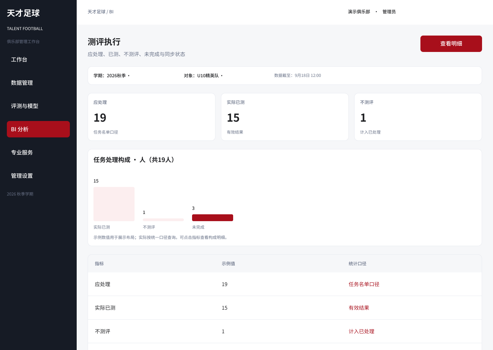
B04 · 学员成长
P1 · 打开Figma画板 · 查看原始截图
- 当前内容与动作
- 单孩20米跑历史，但顶部对象筛选仅显示队伍；明细→M11。
- 缺口判断
- 缺明确学员/项目选择，比较条件及不可比/缺测状态未呈现；内部已配置纵向滚动。
- 补齐建议
- 补单孩与项目选择、比较条件说明及明细/导出，保持对象一致。
原型证据：查看明细 → https://www.figma.com/proto/EyQtDtILGDZDf6neLBL6vs?node-id=20-52&starting-point-node-id=20-52
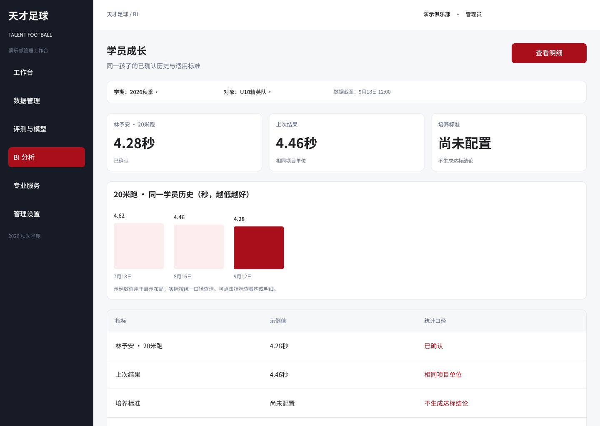
B05 · 专业服务分析
P2 · 打开Figma画板 · 查看原始截图
- 当前内容与动作
- 咨询/执行/交付构成；查看明细→S03。
- 缺口判断
- 执行/交付指标也只去统一需求表，未表达对应过滤；内部已有纵向滚动容器。
- 补齐建议
- 分别连接相关阶段对象和条件；服务细则不越过待确认范围。
原型证据：查看明细 → https://www.figma.com/proto/EyQtDtILGDZDf6neLBL6vs?node-id=20-651&starting-point-node-id=20-651
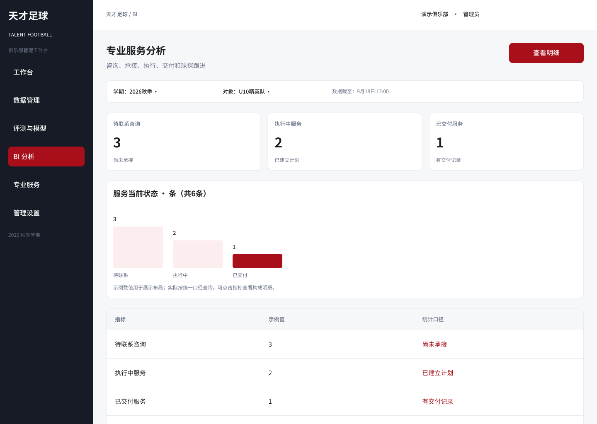
S01 · 服务目录
P2 · 打开Figma画板 · 查看原始截图
- 当前内容与动作
- 服务目录列表，新建和首行→S02。
- 缺口判断
- 查看与配置均进入同一表单，缺只读详情和启停影响表达。
- 补齐建议
- 完善目录查看/编辑区分及状态操作。
原型证据：新建服务 → 20:646；记录 1 → 20:646
S02 · 服务定义
P2 · 打开Figma画板 · 查看原始截图
- 当前内容与动作
- 名称、对象、目标、负责人员、周期/交付、状态；保存→S01。
- 缺口判断
- 服务类型、介绍、咨询入口未独立呈现；控件和必填校验需细化。
- 补齐建议
- 补已确认目录字段及选择交互，暂不增加支付/结算。
原型证据：保存服务 → 20:641
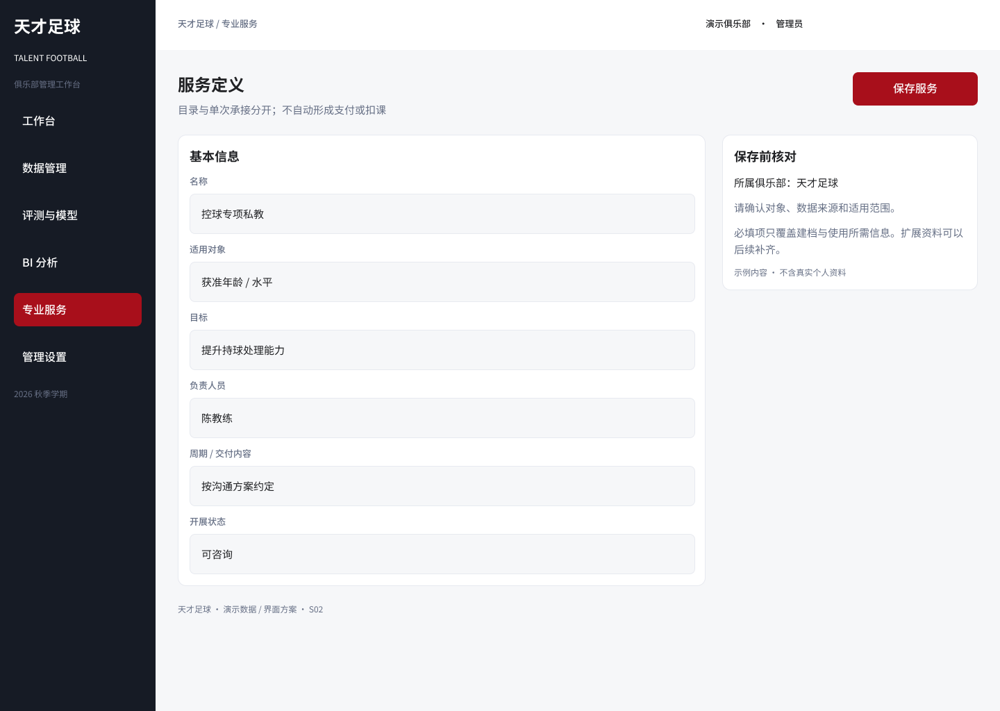
S03 · 需求与承接
P1 · 打开Figma画板 · 查看原始截图
- 当前内容与动作
- 需求列表；“登记需求”和首行均→已有咨询的S04。
- 缺口判断
- 缺新需求登记表单；新建与查看混用，未明确当前对象。
- 补齐建议
- 补登记需求及需求详情，区分新咨询与已有跟进。
原型证据：登记需求 → 20:656；记录 1 → 20:656
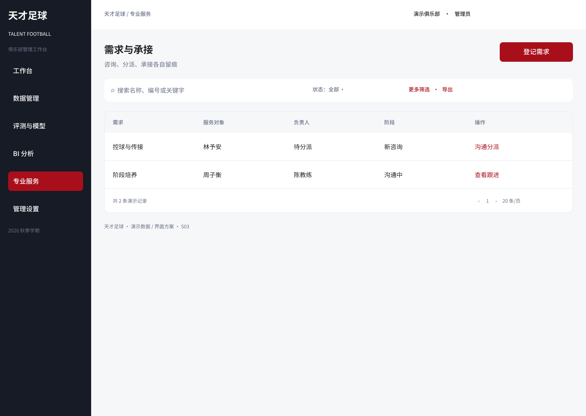
S04 · 沟通与人员分派
P1 · 打开Figma画板 · 查看原始截图
- 当前内容与动作
- 家长意向、候选教练、分派状态示例表；确认→S05。
- 缺口判断
- 缺沟通记录输入和候选人选择；沿用学员通用页签不对应服务处理。
- 补齐建议
- 补需求摘要、沟通记录、候选选择及分派结果，区分分派与承接。
原型证据：确认分派 → 20:661
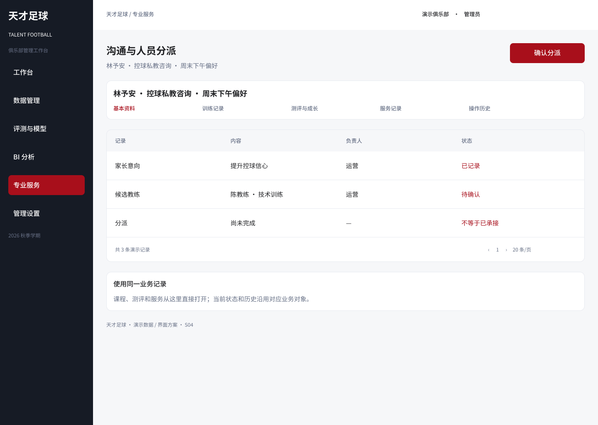
S05 · 计划与执行
P1 · 打开Figma画板 · 查看原始截图
- 当前内容与动作
- 通用周日历及计划阶段表；“添加执行记录”→S06交付列表。
- 缺口判断
- 新增执行操作指向交付，缺执行表单与计划详情；画面未明确服务对象。
- 补齐建议
- 补计划与执行记录维护，关联共同日程/测评并区分交付步骤。
原型证据：添加执行记录 → 20:666
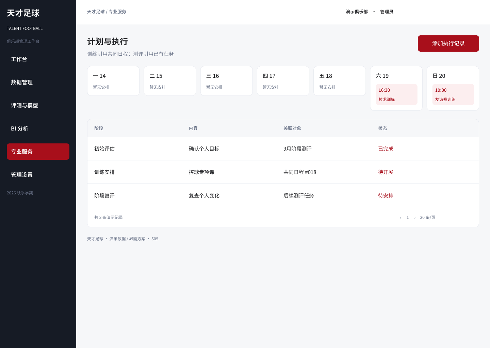
S06 · 交付与反馈
P1 · 打开Figma画板 · 查看原始截图
- 当前内容与动作
- 交付物、来源、确认人、状态表；确认交付→S03。
- 缺口判断
- 缺交付详情、附件上传/预览、反馈输入及交付结果。
- 补齐建议
- 补交付编辑/详情和状态；只承接已确定服务范围。
原型证据：确认交付 → 20:651
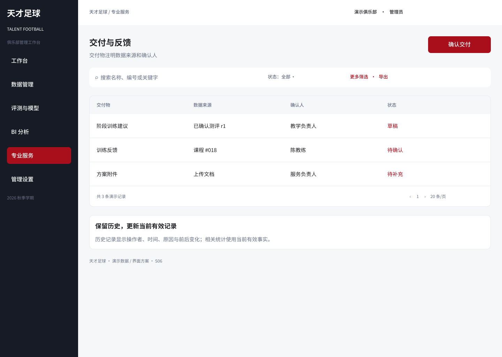
S07 · 球探工作
P2 · 打开Figma画板 · 查看原始截图
- 当前内容与动作
- 球探工作列表；新建观察/首行→S08。
- 缺口判断
- 跟进阶段操作和观察历史详情未展开；不同人员上下文需补。
- 补齐建议
- 完善观察历史及人员/活动关联，内部可见范围独立标识。
原型证据：新建观察 → 20:676；记录 1 → 20:676
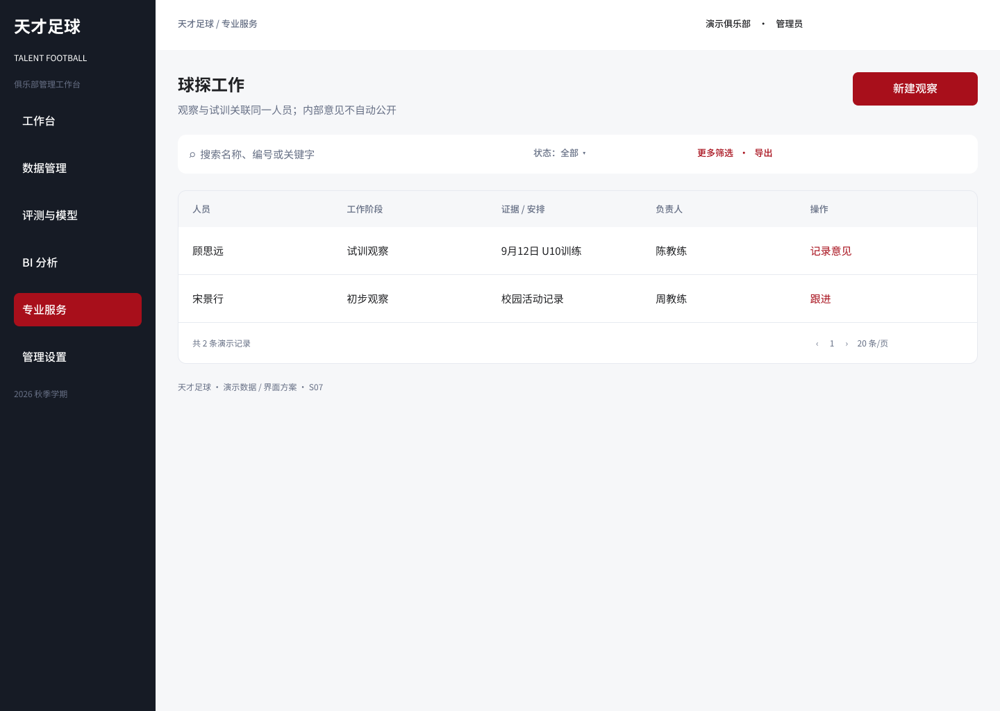
S08 · 球探观察记录
P2 · 打开Figma画板 · 查看原始截图
- 当前内容与动作
- 人员、活动、观察、专业意见、可见范围、下一步；保存→S07。
- 缺口判断
- 缺人员/活动选择与长文本交互，后续试训关联及历史未展开。
- 补齐建议
- 完善表单、关联和只读详情；不扩展为转会等业务。
原型证据：保存观察 → 20:671
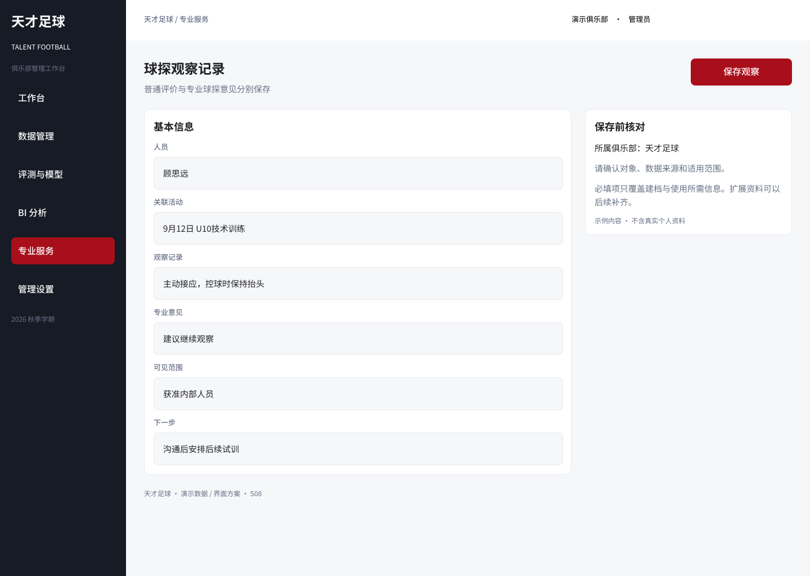
A01 · 账号与角色
P1 · 打开Figma画板 · 查看原始截图
- 当前内容与动作
- 账号角色范围列表；添加及首行→A02已有陈教练授权。
- 缺口判断
- 缺新账号创建及停用操作；家长绑定查看无业务跳转。
- 补齐建议
- 补创建/启停入口和账号详情，分别承接教练授权与家长绑定。
原型证据：添加账号 → 20:686；记录 1 → 20:686
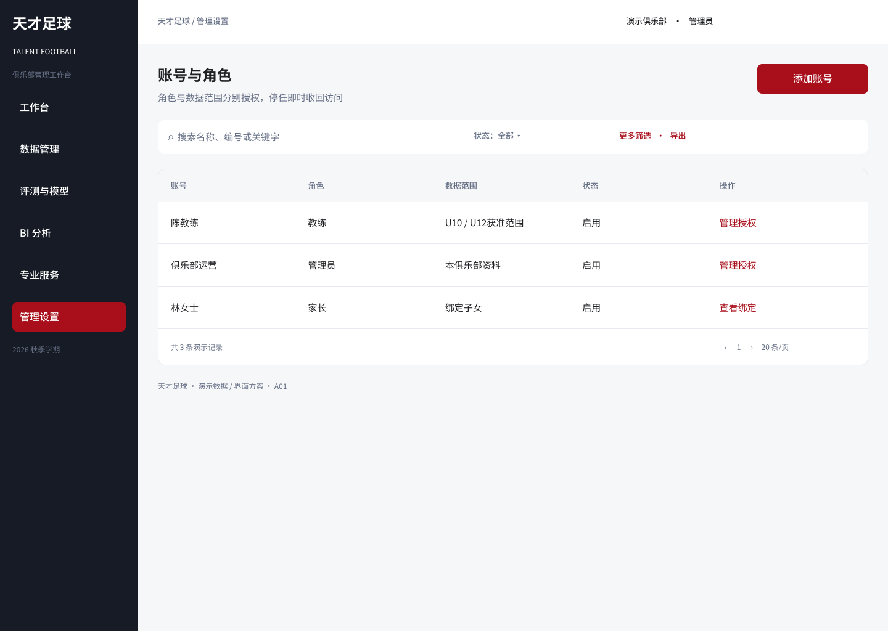
A02 · 范围授权与绑定
P1 · 打开Figma画板 · 查看原始截图
- 当前内容与动作
- 教练角色/队伍/教学字段/敏感字段概括表单；保存→A01。
- 缺口判断
- 授权选择、独立导出权限、家长绑定及解绑流程未展开。
- 补齐建议
- 按角色模板补可选范围、变更影响及绑定维护，服务端权限边界沿用既有约定。
原型证据：保存授权 → 20:681
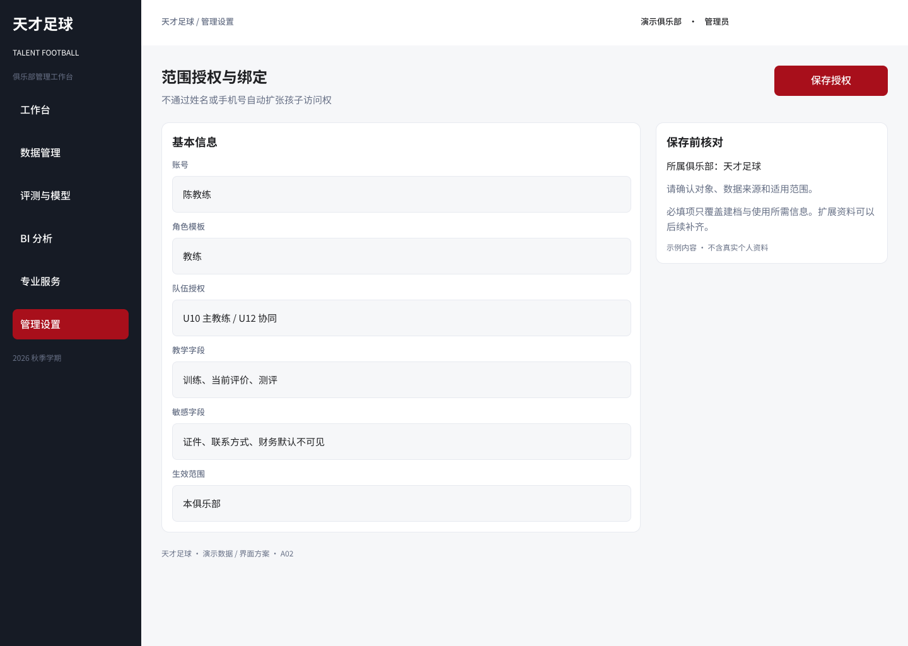
A03 · 俱乐部与集成
P1 · 打开Figma画板 · 查看原始截图
- 当前内容与动作
- 俱乐部、主色、接入、来源、公共模板说明；保存→A04。
- 缺口判断
- 接入环境和连接状态仅是文字，没有实际配置/状态详情；品牌资料也不完整。
- 补齐建议
- 补已确认接入/品牌字段与配置结果，外部来源细则仍待O-05。
原型证据：保存配置 → 20:696
A04 · 操作与导出历史
P2 · 打开Figma画板 · 查看原始截图
- 当前内容与动作
- 操作与导出日志列表；无业务跳转。
- 缺口判断
- 通用状态筛选不能充分表达对象/操作者/动作查询；缺单条日志详情。
- 补齐建议
- 补专用筛选、变更前后值及导出范围/结果详情，敏感原值继续受控。
原型证据：本画板未检出非全局导航原型动作
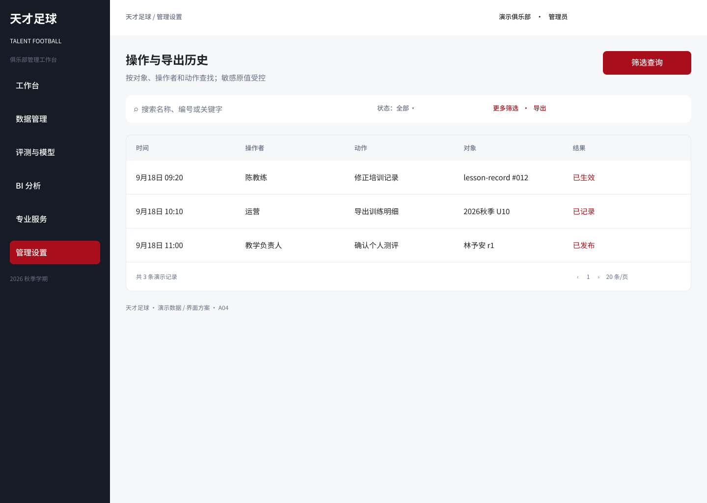
X16 · 后台登录
P2 · 打开Figma画板 · 查看原始截图
- 当前内容与动作
- 账号密码登录；按钮→D01；提供联系管理员提示。
- 缺口判断
- 缺账号/密码错误、停用/无授权、提交中等状态；恢复路径仅说明。
- 补齐建议
- 补登录状态及授权账号的恢复说明；不擅自增加新的认证方式。
原型证据：登录工作台 → https://www.figma.com/proto/EyQtDtILGDZDf6neLBL6vs?node-id=18-2&starting-point-node-id=18-2
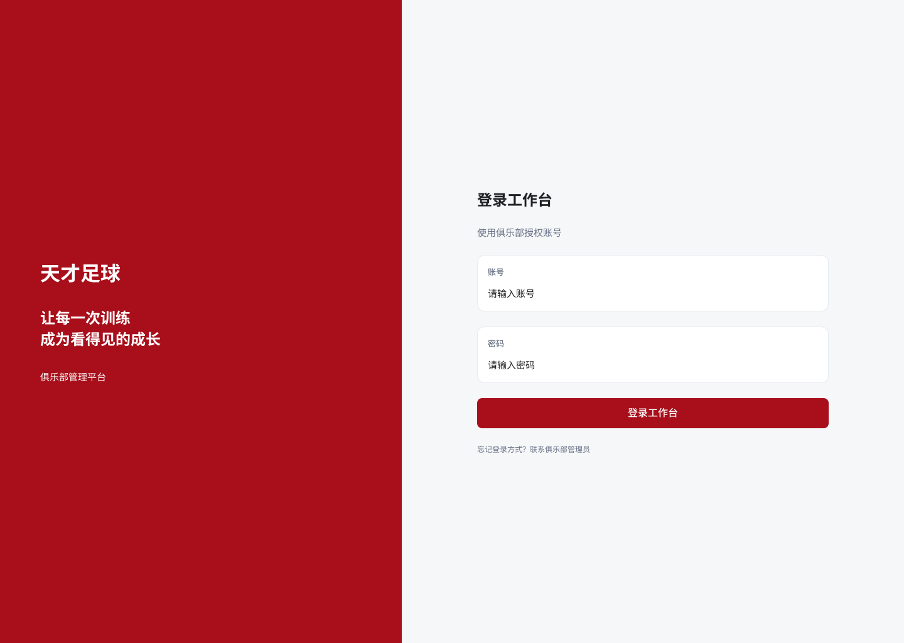